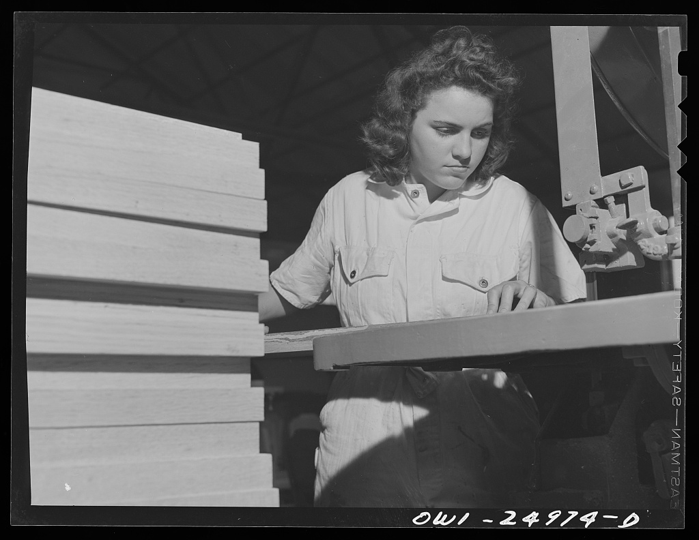

What makes experiential learning different?
Tuesday, September 15
Tuesday12:40–2:25 p.m.Steitz Hall 102

A practical course workspace connecting experiential learning, reflection, and preparation for professional life.
Come ready to test the day’s question with evidence and conversation.
Try → Reflect → Adjust
Practice cycle
Each Tuesday moves from a question to preparation, practice, an artifact, and a brief reflection.
Course tools
Student destinations
Coming meetings
10 total
| Tue Sep 15 | What makes experiential learning different? |
|---|---|
| Tue Sep 22 | How do I explore a life without pretending I can plan all of it? |
| Tue Sep 29 | How do values become criteria for choosing opportunities? |
View all 10 meetings
| Tue Sep 15 | What makes experiential learning different? |
|---|---|
| Tue Sep 22 | How do I explore a life without pretending I can plan all of it? |
| Tue Sep 29 | How do values become criteria for choosing opportunities? |
| Tue Oct 6 | What can other students' internship experiences teach us? |
| Tue Oct 13 | What story does my public professional presence tell? |
| Tue Oct 20 | How can application materials remain specific, human, and mine? |
| Tue Oct 27 | How do I build relationships without treating people transactionally? |
| Tue Nov 3 | How can I turn experience into evidence in an interview? |
| Tue Nov 10 | What does professional judgment require when values conflict? |
| Tue Nov 17 | How do I enter an internship ready to learn? |
Registrar-reserved final period
Tuesday, November 24, 2026